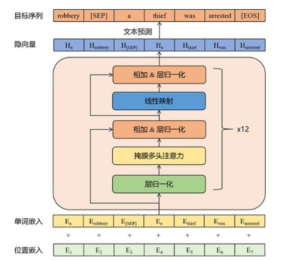
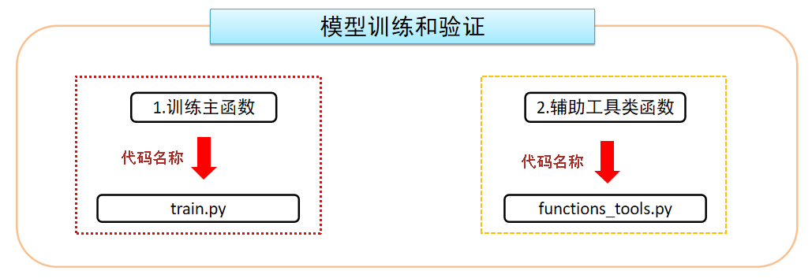

🧭
工程实践提示：示例中的模型地址、数据库账号和密钥均应通过环境变量或独立配置文件注入；部署前还需补充权限控制、输入校验、超时重试、日志脱敏、来源引用与离线评估。
3. 模型搭建
3.1 模型架构介绍

-
模型架构解析：
- 输入层：词嵌入层：WordEmbedding +位置嵌入层：PositionEmbedding
- 中间层：Transformer的Decoder模块---12层
- 输出层：LayerNorm层 + 线性全连接层
-
模型主要参数简介(详见模型的config.json文件):
- n_embd: 768
- n_head: 12
- n_layer: 12
- n_positions: 1024
- vocab_size: 13317
3.2 GPT2模型准备
- 本次项目使用GPT2的预训练模型，因此不需要额外搭建Model类，下面代码是如何直接加载使用GPT2预训练模型
- 代码示例:
Python
from transformers import GPT2LMHeadModel, GPT2Config # 创建模型 if params.pretrained_model: # 加载预训练模型 model = GPT2LMHeadModel.from_pretrained(params.pretrained_model) else: # 初始化模型 model_config = GPT2Config.from_json_file(params.config_json) model = GPT2LMHeadModel(config=model_config)
- 如果使用第二种方式，需要配置模型的参数
位置：llm_tuning/Gpt2_Chatbot/config/config.json
JSON
{ "activation_function": "gelu_new", "architectures": [ "GPT2LMHeadModel" ], "attn_pdrop": 0.1, "bos_token_id": 50256, "embd_pdrop": 0.1, "eos_token_id": 50256, "gradient_checkpointing": false, "initializer_range": 0.02, "layer_norm_epsilon": 1e-05, "model_type": "gpt2", "n_ctx": 1024, "n_embd": 768, "n_head": 12, "n_inner": null, "n_layer": 12, "n_positions": 1024, "output_past": true, "resid_pdrop": 0.1, "summary_activation": null, "summary_first_dropout": 0.1, "summary_proj_to_labels": true, "summary_type": "cls_index", "summary_use_proj": true, "task_specific_params": { "text-generation": { "do_sample": true, "max_length": 400 } }, "tokenizer_class": "BertTokenizer", "transformers_version": "4.2.0", "use_cache": true, "vocab_size": 13317 }
4. 模型训练和验证
- 主要代码

-
代码位置
-
训练主函数：llm_tuning/Gpt2_Chatbot/train.py
-
辅助工具类：llm_tuning/Gpt2_Chatbot/functions_tools.py
- trian.py代码解析
Python
import os from datetime import datetime import torch from torch.optim import AdamW from tqdm import tqdm from transformers import GPT2LMHeadModel, GPT2Config, BertTokenizer, get_linear_schedule_with_warmup from Gpt2_Chatbot.data_preprocess.dataloader import get_data_loader from Gpt2_Chatbot.functions_tools import calculate_acc from Gpt2_Chatbot.parameter_config import ParameterConfig pc = ParameterConfig() def train_epoch(model, train_dataloader, optimizer, scheduler, epoch): ''' :param model: 模型 :param train_dataloader: 训练集的dataloader :param optimizer: 优化器 :param scheduler: 学习率预热的对象 :param epoch: 轮次 :return: 平均损失和平均准确率 ''' print(f"Epoch:{epoch+1} 开始训练...") # 指明模型训练 model.train() # 设置一些日志参数 epoch_start_time = datetime.now() total_loss = 0 # 记录整个epoch的loss之和 total_correct_num = 0 # 记录整个epoch的预测正确的word的数量 total_predict_num = 0 # 记录整个epoch的预测的word的总数量 # 开始训练，遍历数据集 for batch_idx, (input_ids, labels) in enumerate(tqdm(train_dataloader)): # print(f'input_ids-->{input_ids.shape}') # [8, 49] # print(f'labels-->{labels.shape}') # [8, 49] # 1.将数据送入模型，得到预测结果和损失 input_ids = input_ids.to(pc.device) labels = labels.to(pc.device) ''' 在调用大模型时，如果输入里包括了labels参数，此时输出结果里会直接拿到loss损失；如果输入里只有input_ids，此时输出结果里不会含有loss损失 在计算损失时，模型内部会将 logits/labels 自动做位移对齐（logits[..., :-1, :]和labels[..., 1:]），所以我们就可以在处理模型的输入和标签时，它们的实际token是一样的。另外，使用损失计算方式是交叉熵损失CrossEntropyLoss，计算损失时会自动忽略-100。 ''' outputs = model(input_ids, labels=labels) # print(f'outputs-->{outputs}') # 输出结果中包括 loss 和 logits 和 past_key_values # print(f'outputs-->{outputs.keys()}') # print(f'logits-->{outputs.logits.shape}') # [8, 49, 13317] # print(f'loss-->{outputs.loss}') # 9.59468364 logits = outputs.logits loss = outputs.loss # 累加当前损失到总损失中 total_loss += loss.item() # 2.进行训练 ''' pc.gradient_accumulation_steps = 4 梯度累积的步数 如果设置了梯度累积的步数，并且大于1，此时则需要对损失进行缩放 原因：因为在累积的步数内，损失和梯度都会进行累积，而不是在每次批次结束之后立即更新权重，通过损失除以梯度累积的步数进行缩放，可以使最终得到的结果和实际应用大的batch_size得到的结果一致 ''' if pc.gradient_accumulation_steps > 1: loss = loss / pc.gradient_accumulation_steps # 对loss进行缩放 # 反向传播（梯度计算） loss.backward() # 梯度裁剪 ''' 作用： 当max_norm/total_norm < 1时，将梯度乘以缩放系数，从而防止梯度过大带来梯度爆炸或者训练不稳定 使用方式：torch.nn.utils.clip_grad_norm_() 参数：parameters:模型的参数；max_norm：最大的梯度范数，总的梯度范数超过这个值之后，就会进行梯度裁剪 ''' torch.nn.utils.clip_grad_norm_(model.parameters(), max_norm=pc.max_grad_norm) # 在到达梯度累积的步数之后，执行参数更新 if (batch_idx + 1) % pc.gradient_accumulation_steps == 0: # 梯度更新（参数更新） optimizer.step() # 学习率更新 scheduler.step() # 梯度清零 optimizer.zero_grad() # 3.统计指标并打印 # 统计该batch的预测token的正确数与总数 batch_correct_num, batch_total_num = calculate_acc(logits, labels, ignore_index=pc.ignore_index) # print(f'batch_correct_num-->{batch_correct_num}') # print(f'batch_total_num-->{batch_total_num}') total_correct_num += batch_correct_num total_predict_num += batch_total_num # 每隔 pc.loss_step 批次打印一次训练结果 if (batch_idx + 1) % pc.loss_step == 0: print(f'epoch: {epoch+1}, batch: {batch_idx+1}, ' f'loss: {loss.item() * pc.gradient_accumulation_steps}, ' f'batch_acc: {batch_correct_num/batch_total_num}, lr: {scheduler.get_last_lr()[0]}') # break # 整个轮次训练完成后，统计整个epoch的指标 epoch_mean_loss = total_loss / len(train_dataloader) epoch_mean_acc = total_correct_num / total_predict_num print(f"第{epoch+1}轮次训练结束，平均的损失为{epoch_mean_loss}，平均的准确率为{epoch_mean_acc}") print('完成本轮次训练所花时间为: {}'.format(datetime.now() - epoch_start_time)) return epoch_mean_loss, epoch_mean_acc def valid_epoch(model, valid_dataloader, epoch): ''' :param model: 模型 :param valid_dataloader: 验证集的dataloader :param epoch: 轮次 :return: 平均损失和平均准确率 ''' print(f"Epoch:{epoch + 1} 开始评估...") # 指明模型评估模式 model.eval() # 设置一些日志参数 epoch_start_time = datetime.now() total_loss = 0 # 记录整个epoch的loss之和 total_correct_num = 0 # 记录整个epoch的预测正确的word的数量 total_predict_num = 0 # 记录整个epoch的预测的word的总数量 # 开始评估，遍历数据集 with torch.no_grad(): # 禁止计算梯度，来节省显存 for batch_idx, (input_ids, labels) in enumerate(tqdm(valid_dataloader)): # 1.将数据送入模型，得到预测结果和损失 input_ids = input_ids.to(pc.device) labels = labels.to(pc.device) outputs = model(input_ids, labels=labels) logits = outputs.logits loss = outputs.loss # 2.统计指标并打印 total_loss += loss.item() # 统计该batch的预测token的正确数与总数 batch_correct_num, batch_total_num = calculate_acc(logits, labels, ignore_index=pc.ignore_index) total_correct_num += batch_correct_num total_predict_num += batch_total_num # 整个轮次评估完成后，统计整个epoch的指标 epoch_mean_loss = total_loss / len(valid_dataloader) epoch_mean_acc = total_correct_num / total_predict_num print(f"第{epoch+1}轮次评估结束，平均的损失为{epoch_mean_loss}，平均的准确率为{epoch_mean_acc}") print('完成本轮次评估所花时间为: {}'.format(datetime.now() - epoch_start_time)) return epoch_mean_loss, epoch_mean_acc def model2train(): # todo:1 加载数据(训练集和验证集) train_dataloader, valid_dataloader = get_data_loader(pc.train_path, pc.valid_path) print(f'训练集的长度-->{len(train_dataloader)}') print(f'验证集的长度-->{len(valid_dataloader)}') # todo:2 加载模型 # 2.1 创建模型 if pc.pretrained_model: # 加载预训练模型 model = GPT2LMHeadModel.from_pretrained(pc.pretrained_model) else: # 初始化模型 model_config = GPT2Config.from_json_file(pc.config_json) model = GPT2LMHeadModel(config=model_config) print(f'model-->{model}') # 2.2 将模型放到指定设备上 model.to(pc.device) # 2.3 需要对比tokenizer的词表大小和模型的词表大小是否一致 tokenizer = BertTokenizer.from_pretrained(pc.vocab_path) # print(f'tokenizer.vocab_size-->{tokenizer.vocab_size}') # print(f'model.config.vocab_size-->{model.config.vocab_size}') assert tokenizer.vocab_size == model.config.vocab_size, '模型和tokenizer的词表大小不一致' # todo:3 设置训练的组件 # 优化器对象 optimizer = AdamW(model.parameters(), lr=pc.lr, eps=pc.eps) ''' 优化点：学习率预热 学习率预热的目的：让模型在初始阶段更快的使用数据，避免训练过程中学习率过大或过小带来训练不稳定或者收敛速度太慢的问题，从而提高模型训练效果和泛化性能 实现方式：在初始阶段，将学习率从较小的值逐步增加到预设的初始值，然后按照我们设定的训练策略逐渐变小。 get_linear_schedule_with_warmup: 使用这个方法来实现学习率预热，它的方式是从0以线性的方式增大到预设的学习率，然后再以线性的方式逐渐降低到0 参数： optimizer：优化器对象 num_warmup_steps：预热步数，指的是从0增加到预设的学习率所需的步数 num_training_steps: 指的是整个训练过程的总的步数，确切来说在给定的数据集上，参数更新的次数。 ''' # total_steps = len(train_dataloader) * pc.epochs # 不进行梯度累积时，总的训练步数 total_steps = len(train_dataloader) * pc.epochs / pc.gradient_accumulation_steps # 进行梯度累积时，总的训练步数 scheduler = get_linear_schedule_with_warmup(optimizer, num_warmup_steps=pc.warmup_steps, num_training_steps=total_steps) # todo:4 设置训练的参数 train_losses = [] # 存储训练过程中，每轮训练的loss valid_losses = [] # 存储验证过程中，每轮验证的loss best_valid_loss = float('inf') # 最佳验证集loss train_correct_rate = [] # 存储训练过程中，每轮训练的预测准确率 valid_correct_rate = [] # 存储验证过程中，每轮验证的预测准确率 # todo:5 进行轮次训练 for epoch in range(pc.epochs): # todo: 5.1 模型训练 train_loss, train_correct = train_epoch(model, train_dataloader, optimizer, scheduler, epoch) train_losses.append(train_loss) train_correct_rate.append(train_correct) # todo: 5.2 模型评估 valid_loss, valid_correct = valid_epoch(model, valid_dataloader, epoch) valid_losses.append(valid_loss) valid_correct_rate.append(valid_correct) # todo: 5.3 保存模型 if valid_loss < best_valid_loss: print(f'当前最好的模型是第{epoch}轮次的，损失为{valid_loss}。') best_valid_loss = valid_loss # 更新最小的验证集损失 # 当前这个模型是更好的，需要进行保存 save_path = os.path.join(pc.save_model_path, 'best_model') if not os.path.exists(save_path): os.mkdir(save_path) model.save_pretrained(save_path) print(f'train_losses-->{train_losses}') print(f'valid_losses-->{valid_losses}') print(f'train_correct_rates-->{train_correct_rate}') print(f'valid_correct_rates-->{valid_correct_rate}') if __name__ == '__main__': model2train()
- functions_tools.py代码解析
Python
def calculate_acc(logits, labels, ignore_index=-100): ''' 计算模型预测结果 准确的word个数和总的word个数，这些个数中都是不包含-100标签所在的位置的 :param logits: 模型的预测输出 :param labels: 真实标签 :param ignore_index: 在计算时，需要忽略的标签索引，默认为-100 :return: correct_num 预测正确的个数, total_num 总的个数 ''' # print(f'原始logits-->{logits.shape}') # [8, 49, 13317] # print(f'原始labels-->{labels.shape}') # [8, 49] # 1.处理输入数据，去掉预测结果的最后一个字符，去掉标签的第一个字符 logits = logits[:, :-1, :] labels = labels[:, 1:] # print(f'位移后的logits-->{logits.shape}') # print(f'位移后的labels-->{labels.shape}') # 为了方便后续的计算，需要将 logits 转换成2维，而 labels 转换成1维 logits = logits.contiguous().view(-1, logits.shape[-1]) labels = labels.contiguous().view(-1) # print(f'降维后的logits-->{logits.shape}') # print(f'降维后的labels-->{labels.shape}') # 2.取出最大的概率值，并返回最大概率的索引 max_index = logits.argmax(dim=-1) # print(f'最大概率的索引-->{max_index.shape, max_index}') # 3.计算预测正确的个数和总的个数 # print(f'labels--->{labels}') # ne()的作用是判断两个张量的元素是否相等，返回一个布尔张量，如果两个元素相等，返回False，否则返回True not_pad = labels.ne(ignore_index) # print(f'not_pad--->{not_pad}') # eq()的作用是判断两个张量的元素是否相等，返回一个布尔张量，如果两个元素相等，返回True，否则返回False correct_position = max_index.eq(labels) # print(f'correct_position--->{correct_position}') # 需要correct_position中取出-100位置的数据，也就是说只取 pad_mask 为True的数据 # masked_select(boolen张量) 将boolen张量中为True的数据取出来 correct_num = correct_position.masked_select(not_pad).sum() # print(f'correct_position.masked_select(not_pad)--->{correct_position.masked_select(not_pad)}') # print(f'correct_num--->{correct_num}') # 总的个数 total_num = not_pad.sum() return correct_num, total_num